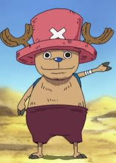

One Piece is a Japanese manga series written and illustrated by Eiichiro Oda. It has been serialized in Shueisha's shōnen manga magazine Weekly Shōnen Jump since July 1997, with its individual chapters compiled into 106 tankōbon volumes as of July 2023. The story follows the adventures of Monkey D. Luffy and his crew, the Straw Hat Pirates, where he explores the Grand Line in search of the mythical treasure known as the "One Piece" in order to become the next King of the Pirates.
Straw Hat Crew
Crew Members:
LUFFY (Captain)

Monkey D. Luffy, also known as "Straw Hat Luffy" and commonly as "Straw Hat", is the founder and captain of the increasingly infamous and powerful Straw Hat Pirates, as well as the most powerful of its top fighters. He desires to find the legendary treasure left behind by the late Gol D. Roger and thereby become the Pirate King, which would help facilitate an unknown dream of his that he has told only to Shanks, his brothers, and crew. He believes that being the Pirate King means having the most freedom in the world.
ZORO (Vice Captain)
.jpeg)
Roronoa Zoro, also known as "Pirate Hunter" Zoro, is a main combatant of the Straw Hat Pirates, one of their two swordsmen, one of the Senior Officers of the Straw Hat Grand Fleet, and is publicly recognized as the right-hand man of his crew's captain Monkey D. Luffy. Formerly a bounty hunter, he is the second member of Luffy's crew and the first to join it, doing so in the Romance Dawn Arc.
SANJI
"Black Leg" Sanji, born as Vinsmoke Sanji, is the cook of the Straw Hat Pirates and one of the Senior Officers of the Straw Hat Grand Fleet. He is the fifth member of the crew and the fourth to join, doing so at the end of the Baratie Arc.
NAMI
.jpeg)
"Cat Burglar" Nami is the navigator of the Straw Hat Pirates and one of the Senior Officers of the Straw Hat Grand Fleet. She is the third member of the crew and the second to join, doing so during the Orange Town Arc. She is the adoptive sister of Nojiko after the two were orphaned and taken in by Bell-mère.
USSOP
.jpeg)
"God" Usopp is the sniper of the Straw Hat Pirates and one of the Senior Officers of the Straw Hat Grand Fleet. He is the fourth member of the crew and the third to join, doing so at the end of the Syrup Village Arc. Although he left the crew during the Water 7 Arc, he rejoined at the end of the Post-Enies Lobby Arc.
CHOPPER
Tony Tony Chopper, also known as "Cotton Candy Lover" Chopper, is the doctor of the Straw Hat Pirates and one of the Senior Officers of the Straw Hat Grand Fleet. He is the sixth member of the crew and the fifth to join, doing so at the end of the Drum Island Arc. He was temporarily forced to join the Foxy Pirates during the Long Ring Long Land Arc, but was quickly returned to Luffy's crew.
FRANKY
.jpeg)
"Iron Man" Franky is the shipwright of the Straw Hat Pirates and one of the Senior Officers of the Straw Hat Grand Fleet. He is the crew's eighth member and the seventh to join, doing so at the end of the Post-Enies Lobby Arc.
NICO ROBIN
.jpeg)
Nico Robin, also known by her epithet "Devil Child" and the "Light of the Revolution", is the archaeologist of the Straw Hat Pirates and one of the Senior Officers of the Straw Hat Grand Fleet. She is the seventh member of the crew and the sixth to join, doing so at the end of the Arabasta Arc. She temporarily left the crew during the Water 7 Arc but rejoined during the Enies Lobby Arc.
BROOK
"Soul King" Brook is the musician of the Straw Hat Pirates, one of their two swordsmen and one of the Senior Officers of the Straw Hat Grand Fleet. He is the ninth member of the crew and the eighth to join, doing so at the end of the Thriller Bark Arc.
JINBE
.jpeg)
"Knight of the Sea" Jinbe is the helmsman of the Straw Hat Pirates and one of the Senior Officers of the Straw Hat Grand Fleet. He is the tenth member of the crew and the ninth to join, doing so during the Wano Country Arc.